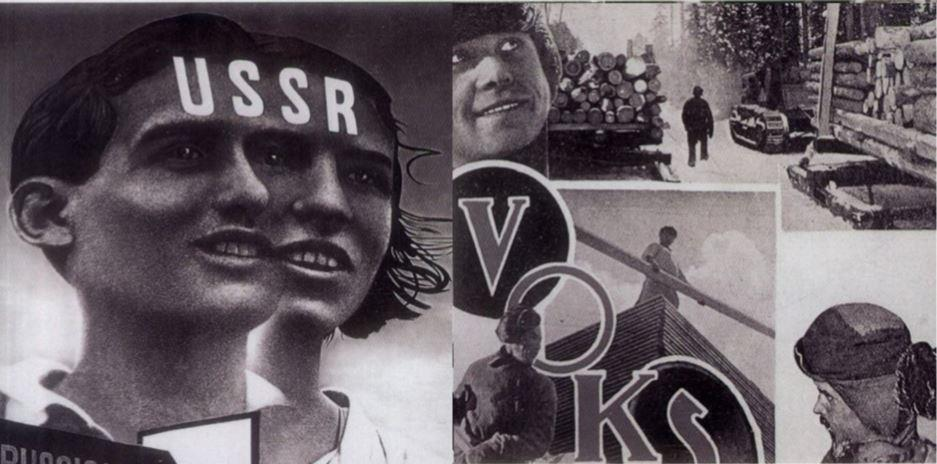
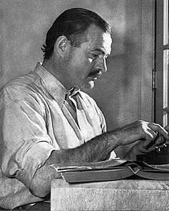
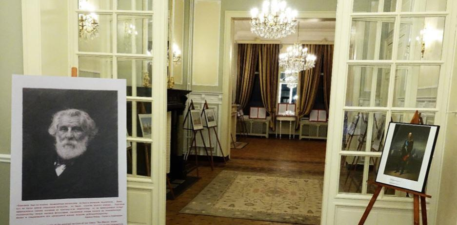
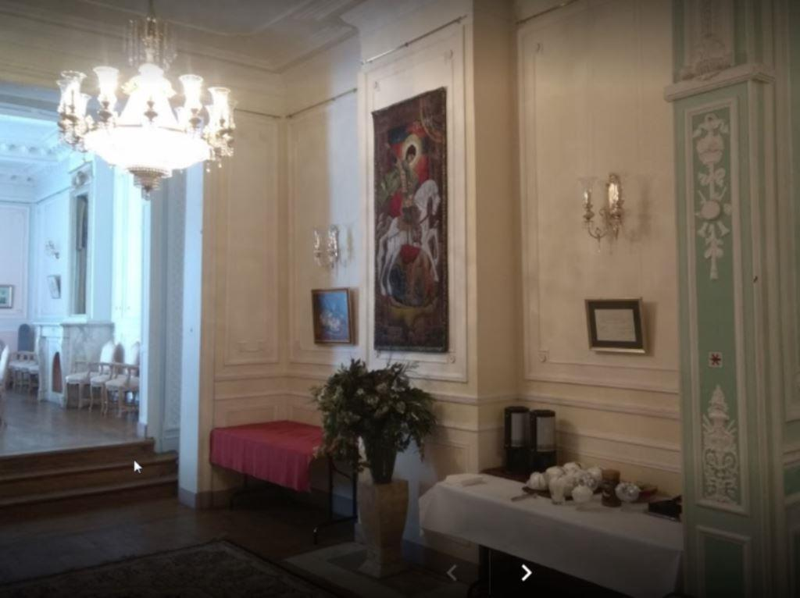
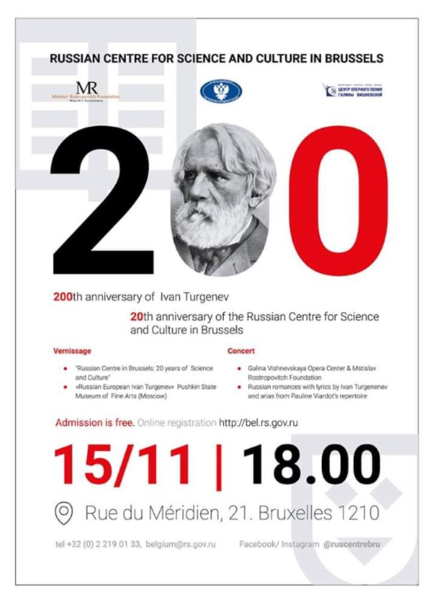
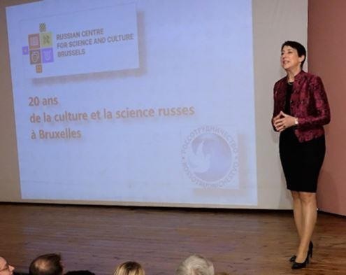
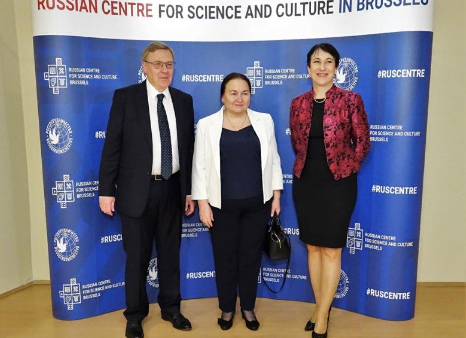
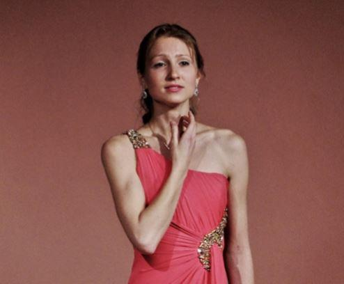

Le « Centre russe », comme l’appellent les Bruxellois, a ouvert ses portes en novembre 1998. L’origine de cette institution remonte aux origines de l’Union soviétique et a – durant son existence – connu quelques changements, en maintenant son premier objectif, tout en s’adaptant aux aléas de l’Histoire et en diversifiant ses objectifs. Petit rappel historique :
AU DÉBUT ÉTAIT LA VOKS
En 1925, le gouvernement de l’URSS décida de créer la « Société soviétique pour les Relations culturelles avec l’Étranger » (VOKS). Á cette époque, le gouvernement n’était pas reconnu au niveau international et qui n’avait pas de contacts avec l’étranger. La VOKS était chargée d’« établir et développer une coopération scientifique et culturelle entre les institutions, les organisations publiques et les acteurs de la culture en URSS et à l’étranger ».
Cet organisme fut d’abord dirigé par Olga Kameneva, sœur de Trotski et épouse de Lev Kamenev, premier Chef de l’État soviétique. La VOKS fut organisée en sections : sciences et techniques, littérature, éducation et formation linguistique. Parmi les personnalités les plus connues à l’origine de ce mouvement on peut citer Serguei Eisenstein, Vladimir Maïakovski, Sergueï Prokofiev, Dimitri Chostakovitch, Constantin Simonov.
Le travail de la VOKS s’est appuyé sur un réseau d’exilés russes et des personnalités tel Albert Einstein, Anatole France, Romain Rolland, Bernard Shaw, Herbert Georges Wells, Marie Curie, Thomas Mann ou Ernest Hemingway.
Elle envoyait des délégations et représentants du milieu scientifique, culturel et artistiques en mission à l’étranger. Ce fut les premiers voyages de citoyens soviétiques hors URSS.
L’organisme œuvrait au niveau international pour mobiliser des personnalités du monde de la culture pour lutter contre le nazisme. Elle diffusait les informations et fournit une aide médicale obtenues grâce aux dons de citoyens étrangers.
Hemingway déclara en juillet 1941 : « Je suis à 100 % solidaire avec l’Union soviétique dans sa lutte contre l’agression fasciste. » La VOKS entretenait des liens avec les Allemands réfugiés, dont Einstein et Bertolt Brecht. L’art occupa une place particulière dans lutte contre le nazisme. L’on pense notamment ici à la 7e symphonie de Chostakovitch « Léningrad », qui fut créée en 1941.
Vers la fin de la guerre, de nouvelles représentations virent le jour. Dans les pays occidentaux, on assista à l’éveil d’un intérêt pour le peuple qui avait vaincu le fascisme. En 1957 il existait des associations dans 47 pays.
IL Y A 60 ANS, LA VOKS DEVINT LA SSOD
Visant de nouveaux objectifs en raison de la Guerre froide, la VOKS devint « l’Union des Sociétés soviétiques d’Amitié et de Relations culturelles avec les Pays étrangers » (SSOD), avec une nouvelle tâche au programme : le développement de l’enseignement de l’histoire et de la culture des autres pays pour les Soviétiques. Alors que pratiquement tous les contacts politiques et économiques avaient cessé, les Sociétés d’Amitié étaient parfois l’unique lien qui permettait encore des échanges.
Des personnalités du domaine des sciences et de la culture se trouvaient à la tête de ces Sociétés, preuve de leur importance : Andreï Tupolev (Association d’Amitié avec la Bulgarie), le réalisateur Sergueï Gherassimov (Italie), Youri Gagarine (Cuba). Les activités étaient diverses : échange de délégations et de groupes touristiques, coopération dans le domaine scientifique et culturel, organisation d’expositions, de festivals etc.
Les Sociétés d’Amitié rassemblaient 25.000 entreprises et organismes et employaient plus de 50 millions de personnes. En 1975, la SSOD disposait d’un réseau de 63 représentations. Durant la crise des missiles, la SSOD déploya une intense activité en faveur de la paix, position reprise par Mikhaïl Gorbatchev. Dans les années 1980, elle poursuivit ses activités, notamment dans le domaine de la langue et de la culture russes. Des cours de langue russe furent organisés avec son soutien dans plus de 90 pays.
DISLOCATION DE L’UNION SOVIÉTIQUE
En avril 1992, suite à la chute de l’URSS, l’« Association russe de Coopération internationale » (RAMS) succéda à la SSOD. En 1994, ses activités furent transférées au « Centre russe de Coopération internationale dans le Domaine des Sciences et de la Culture près le Gouvernement de la Fédération de Russie » (Росзароубейсентр). Pour la première fois de son histoire l’organisme devint un gouvernemental. À sa tête : Valentina Vladimirovna Terechkova, la première femme cosmonaute. Grâce à son dynamisme et à sa notoriété, le Росзароубейсентр a ouvert de nouveaux Centres, dont celui de Bruxelles. Entre 2004 et 2008 furent ouverts les premiers Centres dans les pays de la CEI.
SITUATION ACTUELLE
Afin d’élaborer une nouvelle approche des relations internationales, un organe fédéral fut créé, disposant de ses propres pouvoirs : l’« Agence Fédérale pour la CEI, la Diaspora russe à l’Étranger et la Coopération humanitaire Internationale » (Россотроуднитчество). L’agence poursuit toujours les mêmes objectifs et dispose d’un réseau de 95 représentations, communément appelées « Centre culturel et scientifique », implantées dans 80 pays au monde.
Chaque année les antennes de l’Agence organisent plus de 1.500 manifestations. Les Centres culturels assurent l’enseignement de la langue russe dans le monde et accueillent environ 12.000 personnes chaque année. Ils offrent en outre des possibilités d'études ou de stages linguistiques en Russie. Plusieurs hébergent également des clubs de presse, des cercles de peinture, d'échecs et des sections sportives.

UN COIN DE RUSSIE DANS LA CAPITALE DE L’EUROPE
Le Centre culturel et scientifique de l’Ambassade de la Fédération de Russie (en néerlandais : « Cultureel en Wetenchapelijk Centrum van de Ambassade van de russische Federatie ») est situé à un jet de pierre de la gare du Nord de Bruxelles.
C’est un ensemble de bâtiments construits en 1842, qui ont été entièrement restaurés et équipés de tout le matériel nécessaire à l’organisation de divers événements culturels, scientifiques ainsi que des rencontres d’affaires. Dirigé par Mme Vera Georgievna Bunina1, le Centre organise diverses expositions, des réceptions officielles, des meetings et des entrevues d’affaires.
Il possède une bibliothèque2 et une vidéothèque. Dans une salle multifonctionnelle d’une capacité de 150 personnes se tiennent des symposiums et des conférences, des séances de cinéma3, des concerts d’artistes et d’ensembles musicaux réputés. Des pièces de théâtre sont également régulièrement jouées. Les chaînes de télévision « Pierviy Kanal » et NTV sont accessibles au Centre.
Des cours de langue russe sont donnés au sein de l’Institut. Le niveau s’étend de l’élémentaire à des cours spécialisés dans diverses disciplines (technologie, tourisme ou monde des affaires, etc.). Des concours de connaissance de la langue et des concours de dictées sont également organisés. Enfin, Le centre facilite les études supérieures en Russie pour les étrangers, en collaborant avec plus de 450 prestigieuses universités du pays. Dans le domaine linguistique, notons la participation de l’Université de linguistique Pyatigorsk, dont la renommée est comparable à notre École d'interprètes internationaux de l’Université de Mons. Le choix a été fait de le créer dans un bâtiment indépendant de l’Ambassade, laquelle est située dans les quartiers huppés de Bruxelles, à environ 10 km de là. Le centre profite donc d’un endroit facile d’accès via les transports en commun et d’un parking souterrain à proximité.
Pour en savoir plus : http://bel.rs.gov.ru/ru
ON N’A PAS TOUS LES JOURS VINGT ANS
Le public faisait une longue file devant la porte d’entrée du Centre avant l’heure officielle d’ouverture. Une fois la porte franchie, nous traversons un long porche voûté tandis que s’ouvre une énorme grille en fer forgé en forme d’aigle bicéphale. Le chemin nous mène à une grande cour pavée bordée d’arbres au bout de laquelle se trouve la salle de réception. Verre de bienvenue à la main, les convives découvrent les deux expositions : « Centre russe à Bruxelles : 20 ans de science et de culture » et « Russe européen Ivan Tourgueniev » du Musée national des Beaux-Arts Pouchkine de Moscou. (Notons qu’une autre exposition avait été montée en juillet dernier au Centre.
Elle était composée principalement de panneaux didactiques et d’œuvres d’artistes russes contemporains influencés par le grand écrivain). La première reprend, en une quinzaine de panneaux didactiques illustrés, raconte l’origine des Association d’Amitié ainsi que l’histoire du Centre russe de Bruxelles et les principaux évènements
Les convives sont ensuite invités à se rendre à se rendre à la salle de spectacle, où les 150 sièges sont rapidement occupés. Mme Vera G. Bunina accueille le public : « Notre Centre Russe constitue une plateforme culturelle et scientifique dans l’ère du temps, ayant une identité prononcée. Nous sommes très heureux d’accueillir aujourd’hui nos compatriotes, nos amis belges et nos amis européens. Soyez les bienvenus !».
Dans son allocution, l’Ambassadeur Alexander Avrelovitch Tokovinin a souligné l'importance du renforcement des liens humanitaires en tant que fondement de relations bilatérales solides. Deux enseignantes ont ensuite été mises à l’honneur : Mme Natalia Pavlovitch (Anvers) a reçu un diplôme de l’Agence fédérale pour son travail dans le développement des relations internationales ; Mme Anne Godart a reçu l'insigne honorifique de Rossotrudnichestvo « Pour l'amitié et la coopération ». (Mons)
Le concert de jeunes solistes du Centre lyrique Galina Vichnevskaïa4 et de la Fondation de Mstislav Rostropovitch, attraction principale de la soirée a débuté
Au programme, une douzaine d’œuvres de compositeurs russes (Tchaïkovski, Rimski-Korsakoff, Chostakovitch, Aliabiev), mais aussi Chopin, Gounod et Ravel. On ne peut qu’être frappé par la dextérité de ces cinq jeunes artistes, pianiste, violoniste, saxophoniste ou artistes lyriques. La soprano Oxana Chichenina a particulièrement impressionné le public par son interprétation du « Rossignol » d’Alexandre Aliabiev et Anton Delvig : de la haute voltige vocale, du niveau de
« La Reine de la nuit » de « La Flûte enchantée » ou de « La Fauvette » de « Zémir et Azor », du compositeur liégeois André-Modeste Grétry.
La soirée s’est terminée par un buffet typiquement russe et l’annonce de nouvelles manifestations culturelles.
1 Née à Moscou, Mme Vera Georgievna Bunina est docteur ès Lettres (Université Lomonosov de Moscou, et est diplômée d’universités prestigieuses dont Paris-1 Panthéon-Sorbonne et l’Institut National de la langue russe A. Pouchkine. Professeur agrégé, auteur de nombreux textes scientifiques. Elle a entre autres travaillé à l’Institut Culturel et Scientifique Russe à Paris (1998-2005) et à l’Université MGIMO auprès du MAE de la Russie. En 2011-2018, elle développe les échanges internationaux au sein du Centre d'Innovation « Skolkovo » (Moscou), aussi en coopération avec des organismes et des entreprises belges (L’Agence wallonne à l’Exportation, L’Institut de Microélectronique et Composants à Louvain, l’Université de Gand etc.).
2 La bibliothèque (la plus grande du Bénélux, avec un fond de plus de 5000 volumes) organise un café littéraire où sont organisés des soirées poétiques et des lectures. Ajoutons que le Centre a installé une « boîte à livre ». Les visiteurs sont invités à en emporter gratuitement.
3 Le ciné-club projette des classiques, tout comme des œuvres de réalisateurs contemporains et des films pour enfants.
4 Galina Pavlovna Vichnevskaïa (1926-2012), soprano, est une des plus célèbres artistes lyriques russes. En 2002, elle ouvre à Moscou le Centre lyrique Vichnevskaïa qui forme de jeunes chanteurs d'opéra. Un concours international de chant portant son nom est organisé à Moscou depuis 2006. Elle fut aussi l’épouse de Mstislav Rostropovitch avec lequel elle crée la « Fondation Vichnevskaïa-Rostropovitch », organisation à but caritatif. La « Fondation Rostropovitch » est dédiée à la musique et l'enfance.
Partager cette page